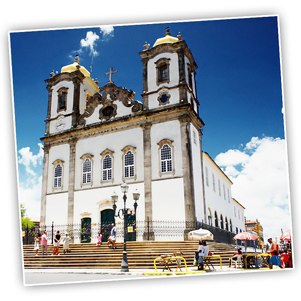
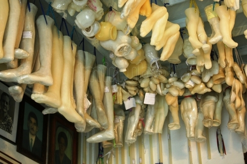
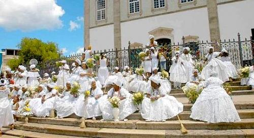

Igreja Do Bomfim — ладаинья-путеводитель
Думаю, многие слышали эту ладаинью. И не нужно хорошо знать португальский, чтобы понять, что в ней перечисляются исторические места Салвадора — города, в котором я мечтаю побывать, с тех пор как я начала заниматься капоэйрой. В очередной раз услышав «Igreja Do Bomfim» я подумала — а много ли Мы знаем об этих местах. То есть, если честно, я подумала много ли Я знаю об этих местах города своих снов?
И так совпало, что я очень люблю искать информацию о капо-песнях. Но делаю это редко, т.к. любознательность моя обычно доводит меня до истощения. Так, начиная искать значение того или иного слова или имени я натыкаюсь на другие интересные слова и имена, и начинаю читать о них, и так бесконечно. Вот и здесь, я решила просто кратко описать все места, которые упоминаются в ладаинье, и в ходе „раскопок“ прочитала про баиянских прачек, узнала что Camafeu de Oxóssi – это не «что», а «кто», прочитала про афоше и детей Ганди и про самого Ганди. И это не дойдя даже до Пелуринью. В общем, я решила не перегружать себя информацией, и, обливаясь слезами, пропускала разные примечательные слова и имена. Вам представляю общую экскурсию по ладаинье. Я разделю этот пост на несколько частей, и буду выкладывать постепенно. Итак:
Iê!
Igreja do Bomfim
Igreja do Bomfim
E Mercado Modelo
Ladeira do Pelourinho
(Ai ai ai) A Baixa do Sapateiro
Por falar em Rio vermelho
Eu me lembrei do Terreiro
Igreja de São Francisco
Igreja de São Francisco
E a Praça da Sé
Onde ficam as bahianas
(Ai ai ai) Vendendo acarajé
Por falar em Itapuá
E Lagoa do Abaêté
(Essa é a minha cidade
Venha quando tu quiser)
Camará
О самой ладаинье удалось найти немного. Кто-то говорит, что её написал Местре Гату Прету, кто-то — что она — плод народного творчества. Я больше склоняюсь ко второму мнению. Ни на одном источнике не указана дата её написание и точный автор. А ладаинью эту пели все кому не лень. Кстати, её же можно услышать на альбоме одного из мастеров „старой гвардии“ Mestre Paulo Dos Anjos.
«Senhor do Bonfim» означает «Господь Наш Хорошего Конца» (Our Lord of a Good End), это один из способов обращения к Иисусу жителей Баийи. O Senhor do Bonfim не является покровителем штата Баия, но больше всего там почитают именно его, особенно в Салвадоре.
Во времена колонизации португальцы прививали в Бразилию католицизм, и навязывали его рабам, запретив иные верования и религии. Однако бразильцы не стали отказываться от своих Ориша, они „спрятали“ их в личности святых, таким образом продолжая поклоняться их истинным божествам. Например, Ошала (Oxalá) часто изображается в белых одеждах и с серебряной короной. Его почитают за красоту, чистоту и как создателя мира и человека, ассоциируя его с Иисусом Христом. Поэтому жители Салвадора, в знак почтения и преданности Господу (на деле — Ошала) одеваются во всё белое.

Знаменитая церковь Бонфима (на португальском: Igreja de Nosso Senhor do Bonfim) находящаяся в Салвадоре, была построена в 18 веке (1754-1772) на холме полуострова Итапажипе (Itapagipe), в нижней части города. Ей приписывают много чудес, исцелений и рассказывают много светлых историй.
И есть даже комната чудес, стены которой покрыты фотографиями и письмами благодарности за свершившиеся чудеса. Здесь видно, что кто-то молился о победе на выборах, кто-то о продвижении по службе… На потолке висят пластиковые части тела, об исцели которых просилось, либо которые были исцелены.

Сюда приезжают со всей Бразилии, чтобы помолиться о помощи и выздоровлении. Особенно много просящих (а также одетых в белое) можно увидеть в январе, в дни празднования Festa do Bonfim — одного из самых важных ежегодных популярных праздников в Сальвадоре, (начинается во второй четверг после Дня трех королей — 6 января – и длится 10 дней).
Кстати, вспомню песню самбы:
Lavadeira
Lava, lava, lavadeira
A roupa do capoeira
Porque hoje é domingo
Amanhã segunda feira
Hoje a festa é no bonfim
Amanhã é na ribeira
Oi, vai ter roda de samba
E jogo de capoeira
Moleque, tome cuidado
Com o tombo da ladeira
Sua roupa está limpa
Coitada da lavadeira
Lava, lava, lavadeira
A roupa do capoeira
Она отчасти имеет отношение и к Церкви Бонфима и к Празднованию.
Дело в том, что вместе с Festa do Bonfim проходит еще один праздник афро-религиозного характера — Lavagem do Bonfim (букв. перевод – мытье Бонфима). Их часто путают, однако Lavagem do Bonfim намного более популярен и уступает лишь Карнавалу.
Традиция Lavagem do Bonfim берет начало в 1773 году, когда члены «братства преданных мирян» («irmandade dos devotos leigos») заставляли рабов мыть Церковь Бонфима в рамках подготовки к празднику „Festa de Nosso Senhor do Bonfim“. Со временем последователи кандомбле начали отождествлять с Господом (Bonfim) их главного ориша — Ошала. Позже архиепископ Сальвадора запретил мытьё внутри храма, но ритуал продолжился на лестнице и у фасада. Во время традиционного мытья церковные двери остаются закрытыми, и баиянские женщины омывают ароматизированной водой ступени и «крыльцо» под звуки африканских песнопений.
Празднование начинается в 10 утра, участники собираются в передней части церкви «Conceição da Praia» и начинают оттуда восьмикилометровую прогулку к Церкви Бонфима.Процессию возглавляют баиянские женщины в традиционных костюмах — тюрбанах, накрахмаленных пышных юбках, браслетах и ожерельях и с сосудами, в которых несут ароматизированную воду. За ними идет блок Сыновей Ганди (см. примечание к статье о Camafeu De Oxossi) и множество верующих. Все одеты в белое, который, как упоминалось выше, является цветом ориша Ошала, отождествляемого в Кандомбле с Иисусом Христом.
Спустя примерно час, процессия достигает лестницы, где уже ждут многие зрители. Это омовение благоуханной водой церкви носит ритуальный характер, символизируя очищение (видимо от грехов, очищение души, хотя это только моя догадка). Баиянки разливают água de cheiro по ступеням лестницы, где также возлагаются цветы, а все остальные поют гимн Bonfim.

Посмотреть на процессию можно здесь и здесь.
А теперь вернемся к песне. По сути – это обращение к прачке, стирающей капоэйрскую одежду (кстати – Белые штаны).
Lava, lava, lavadeira
A roupa do capoeira
Porque hoje é domingo
Amanhã segunda feira
Hoje a festa é no bonfim
Сегодня воскресенье (Празднование Бонфима, как и Лаважем проходят по воскресеньям)
Завтра – понедельник,
Сегодня празднуем Бонфим
Amanhã é na ribeira
Oi, vai ter roda de samba
E jogo de capoeira
Завтра на побережье устроим роду самбы и капоэйры
Moleque, tome cuidado
Com o tombo da ladeira
Sua roupa está limpa
Coitada da lavadeira
Парень, будь осторожен на спуске (склоне), твоя одежда чистая (это наверное, какое-то капоэрское предупреждение, у кого какие версии?)… А вот что такое Coitada я не могу перевести, не хватает знаний и хорошего словаря.
Эту песню я слышала и в роде капоэйры и в роде самбы. Также гугл выдал мне пару стихотворений относительно современных поэтов, с таким же слогом и первой строчкой. Углубляться в поиски не стала. Думаю, прачки, рано или поздно займут место в отдельном посте.
Упоминание о Церкви Бонфим я нашла еще в нескольких песнях, но они не так существенны, поэтому и писать не буду.
Позвольте откланяться. На сегодня всё. Продолжение следует…
P. S. Если у вас есть поправления или другая интересная информация по теме — молю, не держите в себе, поделитесь!